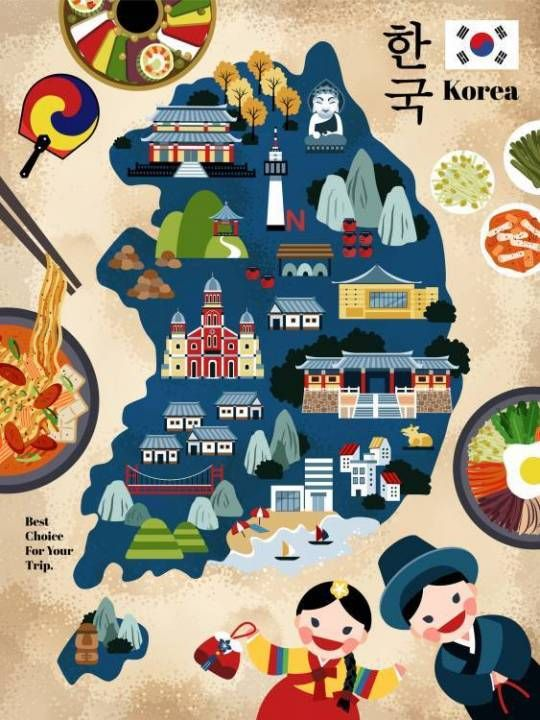

Sobre
A Coreia do Sul é um país localizado no leste da Ásia, sua capital é Seul. O país ficou conhecido por seu rápido crescimento nos últimos 50 anos, tornando-se um centro de tecnologia, educação e cultura, especialmente pelo k-pop.

Cultura
A Coreia do Sul possui valores originados no confucionismo, filosofia moral e ética chinesa, baseada nos ensinamentos de Confúcio. Esse pensamento influencia os aspectos sociais e éticos sul-coreanos, especialmente a valorização da família, a educação e o respeito pelos mais velhos. A culinária é outro traço importante da cultura, os pratos típicos mais conhecidos são o kimchi (vegetais fermentados), bibimbap (arroz com legumes e carne) e bulgogi (carne marinada grelhada).
Sucesso
Nas úlimas décadas, o país ganhou destaque com o K-pop, um gênero musical. Os dramas televisivos, K-dramas, também são muito populares em vários países.